Governance and income in Modi’s India
In 2014 Narendra Modi promised India cleaner government and faster growth. We can’t go back to 2014 and see what would have happened without Modi. But we can make an educated guess. We built a statistical version of India using countries that had followed similar paths for thirty years. Then we compared the two.
When the paper went online in August it made a splash. The Wire, ThePrint and others reported it; within a day the Ministry of Information and Broadcasting sent The Wire a rejoinder calling the study “fanciful,” “rigged” and “a phantom country,” and we were asked to respond. We did. The exchange is in section 07.
“PM Modi has done an unbelievable job in India. I know the liberal Press here, they beat the hell out of him when he’s taken 400 million people out of poverty.” – Jamie Dimon, CEO of JPMorgan Chase, 2024
“The Indian government is one of the most appalling in the world.” – Amartya Sen, Nobel Laureate in Economics, 2023
Same country, same decade. They can’t both be right.
01 · The promises
Modi’s 2014 campaign had one slogan above the rest: achhe din aane wale hain (अच्छे दिन आने वाले हैं), good days are coming. The good days had two parts. One was prosperity: “You gave Congress 60 years, give BJP just 60 months. We will change India’s future and bring about development in 60 months.” The other was cleaner, more effective government, summed up as “minimum government, maximum governance.”
Modi didn’t promise more of the same. He promised something better. So that’s the question we set out to answer: did India actually do better under Modi than we would have expected without him?
A decade on, the report card could have come back four ways: richer and freer, richer but less free, freer but poorer, or neither.
Here is what we found.
02 · The measuring stick
Nobody can rerun the last decade without Modi. The next best thing is a synthetic India: a weighted blend of other countries, with the weights chosen so that the blend tracks India’s actual path over the thirty years before Modi took office, 1984 to 2013. If a blend reproduces India for thirty years, its path after 2014 is a reasonable estimate of where India was headed. The test is then the one Modi set for himself: did his India do better than that?
Income and governance get separate pools of eighteen comparison countries each, chosen by explicit rules on population, income and democracy scores rather than by hand. Significance comes from placebo tests: every comparison country gets the same “treatment,” and we ask whether India’s divergence is larger than theirs. The rules, the lists and the estimators are in the researcher section and the paper.
03 · Maximum governance?
Ten indicators from the Varieties of Democracy project, each plotted as India minus its synthetic counterpart. A line along zero would mean Modi’s India performed exactly as the no-Modi India would have. The dashed line marks 2013, his last year out of office.
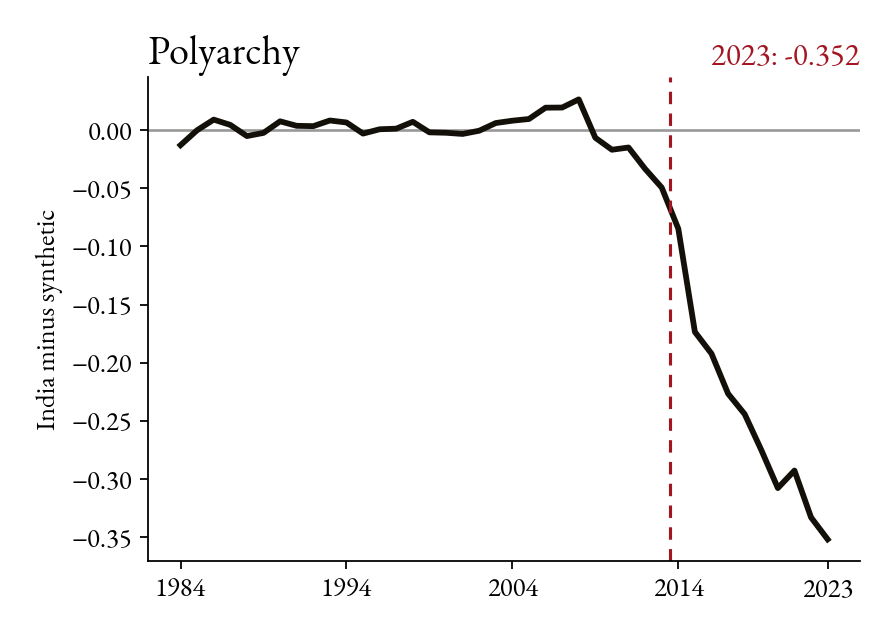
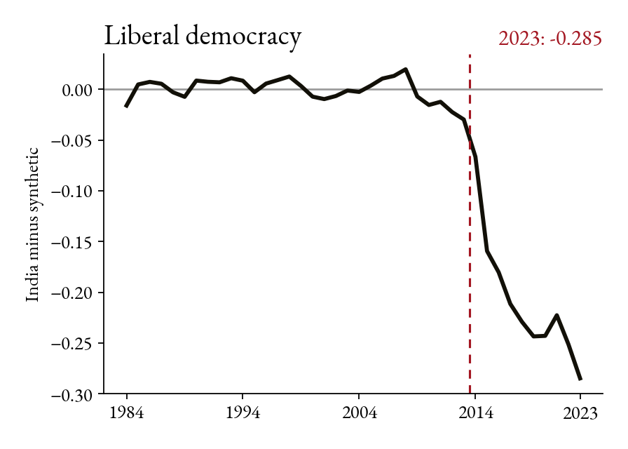
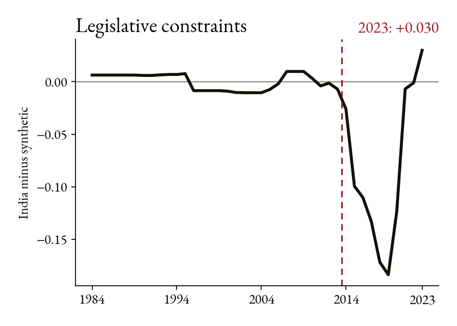
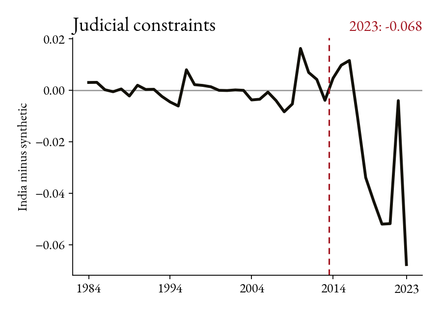
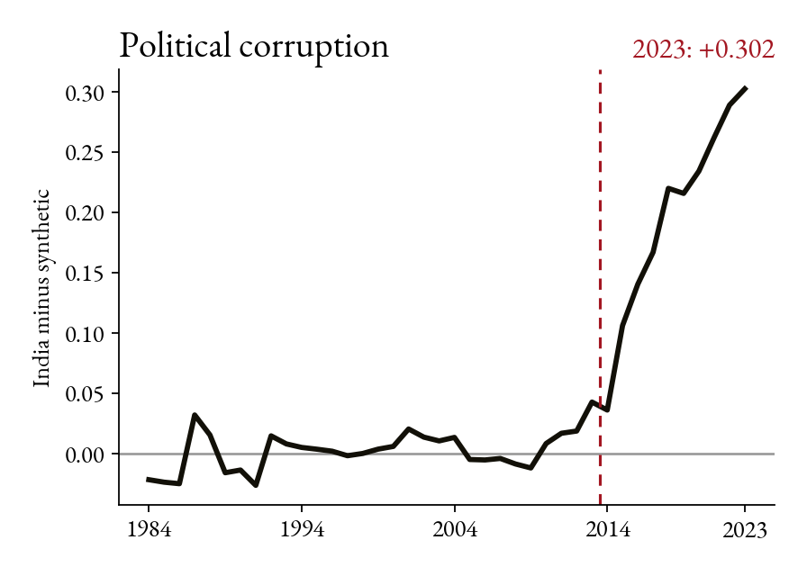
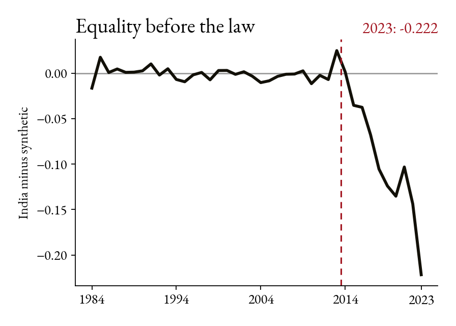
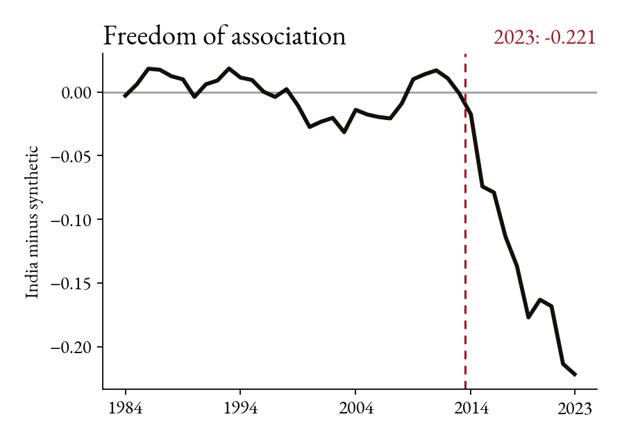
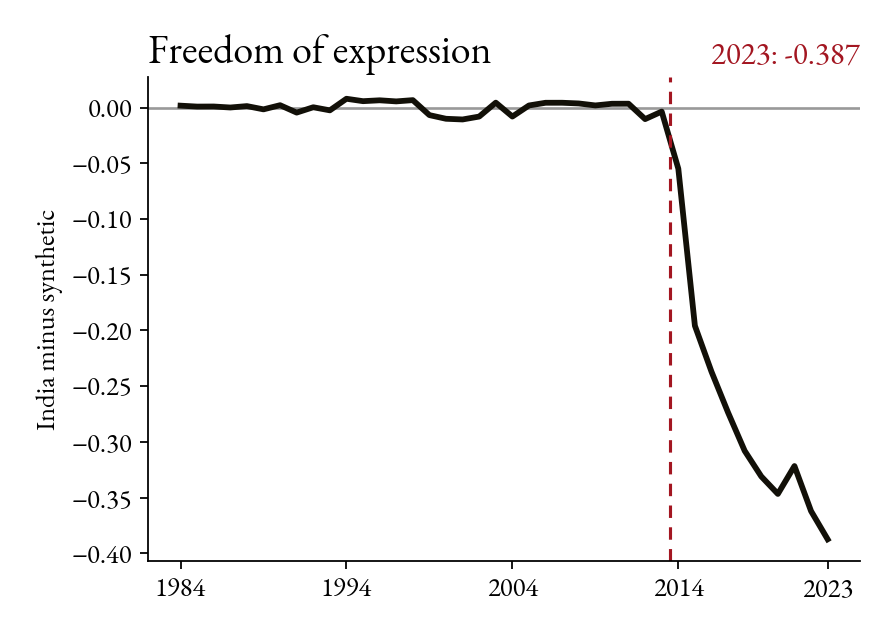
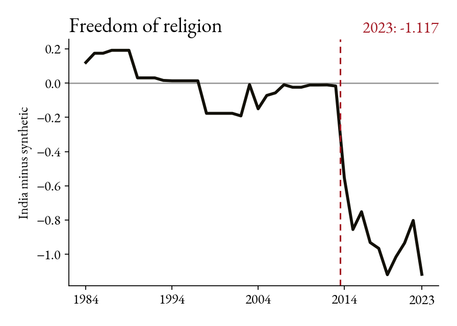
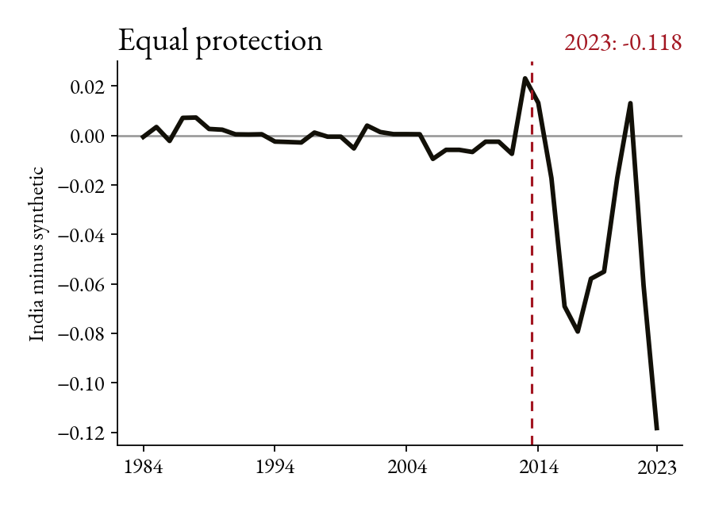
The pattern is the same almost everywhere: a flat line for thirty years, then a drop starting in 2014 that does not reverse. Equality before the law and equal protection improve briefly before falling. Legislative constraints on the executive is the one measure that recovers; it falls sharply and then returns to roughly its counterfactual by 2023. The counterfactuals themselves barely move after 2014; the change is all on India’s side.
In seven of the ten cases India’s divergence is larger than that of every placebo country (a p-value of 0.00). For corruption and equal protection it is the second largest of nineteen (0.05), and for freedom of religion the third largest (0.11).
| Indicator | Gap | As % of India’s 2013 level | Rank among 19 | p |
|---|---|---|---|---|
| Polyarchy (electoral democracy) | −0.352 | −54.2% | 1 | 0.00 |
| Liberal democracy | −0.285 | −54.6% | 1 | 0.00 |
| Legislative constraints on the executive | +0.030 | +3.6% | 1 | 0.00 |
| Judicial constraints on the executive | −0.068 | −8.2% | 1 | 0.00 |
| Political corruption (higher = more corrupt) | +0.302 | +52.0% | 2 | 0.05 |
| Equality before the law | −0.222 | −30.5% | 1 | 0.00 |
| Freedom of association | −0.221 | −28.4% | 1 | 0.00 |
| Freedom of expression | −0.387 | −44.6% | 1 | 0.00 |
| Freedom of religion | −1.117 | — | 3 | 0.11 |
| Equal protection | −0.118 | −16.3% | 2 | 0.05 |
| Gaps are in the units of each index. All run from 0 to 1 except freedom of religion, which is on an interval scale, so a percentage of its 2013 level is not meaningful. Rank is India’s place among the nineteen countries (India plus eighteen placebos) ordered by the ratio of post- to pre-treatment fit; p is the share of the nineteen with a larger ratio. Legislative constraints ranks first because its 2014–2022 decline was large even though it had recovered by 2023. | ||||
Modi made fighting corruption a central part of his campaign. Yet by 2023, India scored substantially worse on V-Dem’s corruption index than our synthetic India. Not exactly the result his supporters were promised.
The V-Dem indices are not the only evidence. Committee review of bills, investigations of opposition politicians, religious hate crimes, foreign-funding registrations for civil-society groups, and government blocking of online content all moved in the same direction after 2014. We have put that material, with its sources, on a separate page.
04 · The 60-month economy
This is the bargain many observers assumed was on offer: give up some democracy, get development. So here is the economic half of the report card, real income per person in India against the India without Modi.
36% Ethiopia · 31% Bangladesh · 26% China · 6% Pakistan · 1% South Korea. An odd-sounding mix, until you see that it matches India’s income path for thirty years with an average miss of $58 a year, about 1% of India’s 2013 income.
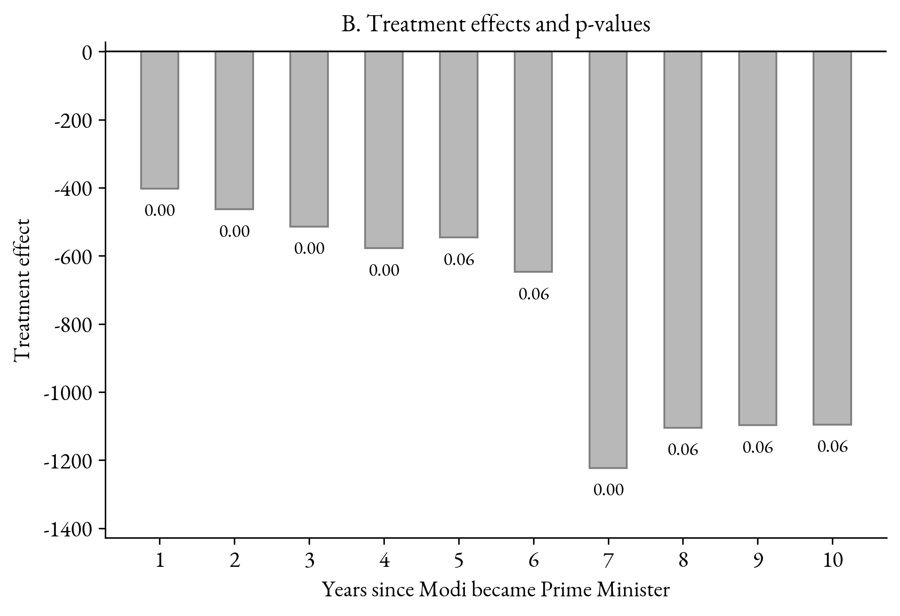
By 2023 the average Indian earns about $1,100 a year less than our estimate of what they would have earned without Modi, roughly 11% of what their income would have been. In five of the ten years India’s shortfall is larger than every placebo we can construct (p = 0.00); in the other five it is beaten by exactly one (p = 0.06).
The statistical evidence is stronger in some years than others. But here’s the important point: Modi didn’t promise to match India’s previous performance. He promised to beat it. We find no evidence that he did. The 60 months came and went, and so did 120.
But what about Covid? Or demonetization? Fair questions. The income gap was already there before Covid, and demonetization was Modi’s own policy. It’s part of his record, not something we should set aside when judging it. And if India’s post-2015 GDP revisions overstate its growth, as several critics argue, our estimate is a floor, not a ceiling.
05 · The elections
There’s an obvious question here. If India has performed so poorly relative to our estimates, why does Modi keep winning elections? We can’t answer that question with these data. But one possibility is that some groups have benefited from his policies, or feel that their interests and values are better represented, even if the country as a whole has fallen behind. Economic performance isn’t the only thing voters care about. And what benefits the country as a whole isn’t necessarily what matters most to every voter. The paper sketches a simple model along these lines.
06 · The verdict
Less democracy, but more prosperity? That might have been one way to defend Modi’s record. But that’s not what we find. Compared with our synthetic India, the real India ended up with weaker governance and lower income. So much for the promised economic miracle.
| Governance | ||
|---|---|---|
| Improves | Declines | |
| Economy Improves |
The promise kept | The strongman bargain |
| Economy Declines |
Freer but poorer | NeitherIndia · 2014–2023India, 2014–2023 |
We are not making a case for the Congress Party. It was not great. But on nine of the ten governance measures we study, and on income, Modi and the BJP did worse than the India they inherited was on course to do.
Achhe din aane wale hain, the campaign promised: good days are coming. The data reply bure din aa gaye (बुरे दिन आ गए): the bad days have come.
07 · The response
On 25 August 2026 The Wire reported the paper’s findings. The next day a Senior Advisor at the Ministry of Information and Broadcasting sent the editors a rejoinder headed “Not ethical journalism.” The Wire published it with our reply. The full exchange is here.
The rejoinder made three claims: that the donor pool was “cherry-picked” and a “complete” pool would flip the result; that V-Dem is “an opaque index of subjective judgements by anonymous experts”; and that a long list of achievements since 2014 shows the economy has been transformed.
Our reply, in brief. The donor pool was chosen once, before we saw any result, and the inventor of the method is explicit that adding poor matches to a pool is “a recipe for bias,” not a robustness check. V-Dem is the standard governance data in political science and the opposite of opaque: it publishes its procedures, its coder-level data and its uncertainty estimates, and it scores our donor countries by the same process it scores India. And nobody disputes that India has grown or built things since 2014; the question is whether it did better than the thirty years before would have predicted, and a list of accomplishments does not answer that. One footnote: Freedom House scores India on “free private expression of personal views without fear of surveillance or retribution” at 4 of 4 in 2012 and 2 of 4 in 2025. Given the tone of the exchange, we can see why.
The critique was aimed at the August version of the paper, with hand-chosen pools of fourteen and twelve donors. The version on this page uses rule-based pools of eighteen, and the results are the same.
08 · For researchers
Open any of these for the details, or go to the paper and the replication files.
India has far better political institutions than most countries at its income level, so no single pool works for both outcomes. The income pool is every country with at least 30 million people in 1984 and income per person below half the US level in 1984: Argentina, Bangladesh, Brazil, China, the Democratic Republic of Congo, Egypt, Ethiopia, Indonesia, South Korea, Mexico, Myanmar, Pakistan, the Philippines, Poland, South Africa, Thailand, Turkey and Vietnam. The governance pool is every country with income below half the US level in 2013, at least 10 million people, and an average EIU democracy score of 6 or more over 2010–13: Argentina, Benin, Brazil, Colombia, the Dominican Republic, Ghana, Greece, Indonesia, Malaysia, Mexico, Peru, the Philippines, Poland, Romania, South Africa, Sri Lanka, Thailand and Zambia. Chile also qualifies but is dropped because V-Dem has no legislative-constraints score for it under Pinochet in 1984–89. Neither list was adjusted after the fact.
For the governance pool the partially pooled estimator gives Greece 35%, Argentina 20%, Malaysia 13% and Sri Lanka 11% of the weight on average across the ten outcomes; ten of the eighteen donors get under 1.5% each. For polyarchy on its own the synthetic India is 49% Argentina, 16% Greece and 14% Sri Lanka, with a pre-treatment RMSPE of 0.015.
Pretend the treatment began in 2004, when Manmohan Singh became Prime Minister, end the sample in 2013, and rerun everything. If the method were manufacturing gaps, it would manufacture one here. It does not: the yearly p-values run from 0.22 to 0.94 and the joint p-value is 0.33. India under a fake treatment looks like a typical member of the donor pool.
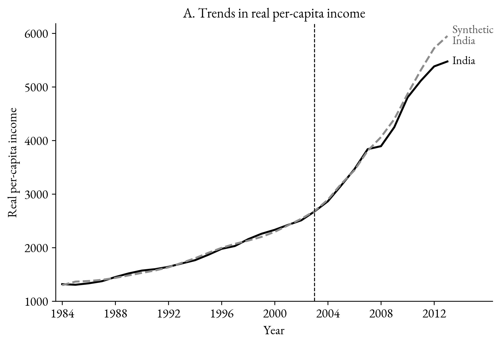
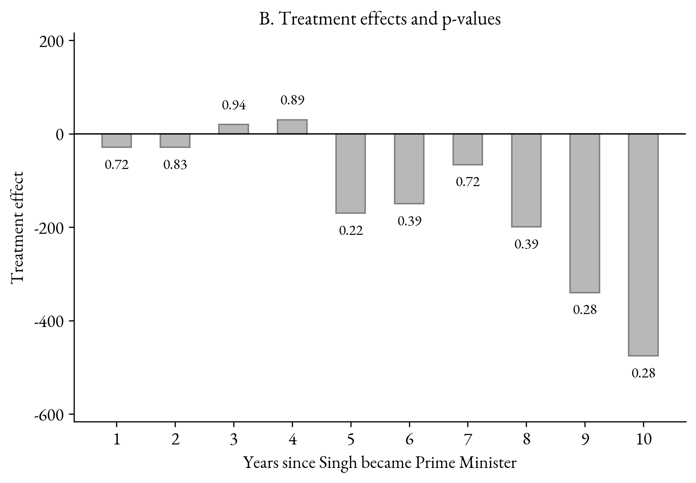
Researchers can tilt synthetic control results through their choice of matching variables. Following the advice of that literature, we re-estimate using every pre-treatment year of income and nothing else. The effect is smaller, −$593 rather than −$1,095 by 2023, but has the same sign and the same pattern of significance.
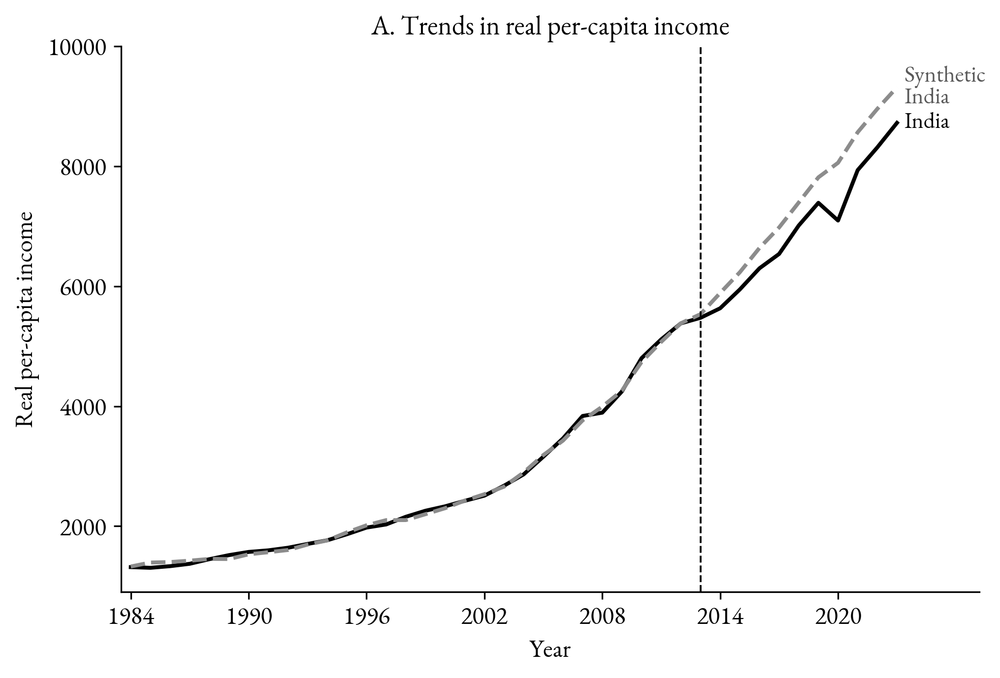
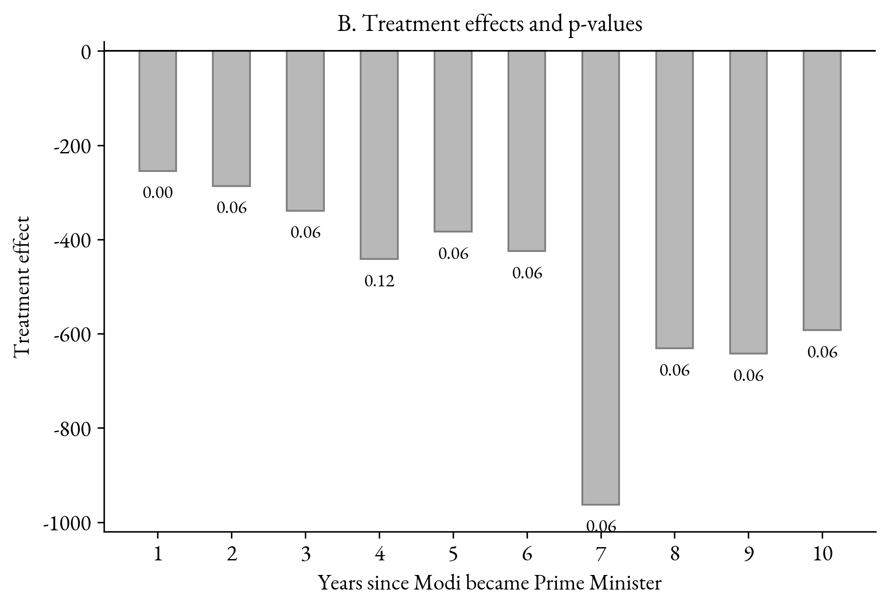
Against our better judgment, we also report a leave-one-out exercise: the all-lags model rerun without Bangladesh, then without China, then without Ethiopia. The three countries are in the pool because they meet the same rule as everyone else, and they get weight because their income paths help reproduce India’s. Dropping Bangladesh or China barely moves the result (2023 effects of −$461 and −$498). Dropping Ethiopia makes the pre-treatment fit worse and the estimated shortfall larger, −$851 in 2023, the most extreme in the placebo distribution. Objecting to Ethiopia makes Modi look worse, not better.
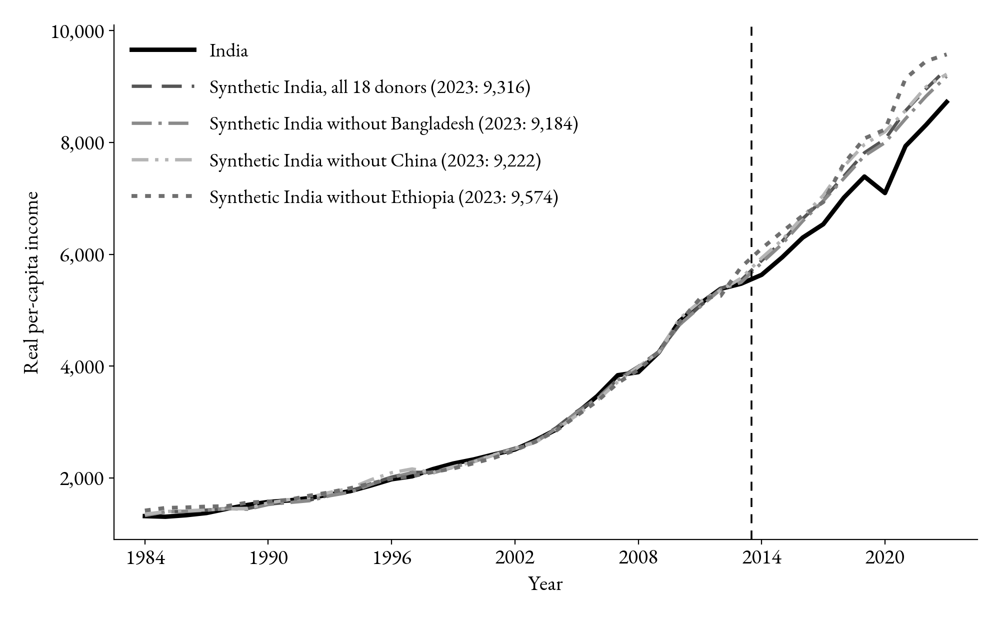
The headline governance results pool the ten outcomes, letting them share information about which donors resemble India. Appendix B repeats the exercise the old-fashioned way, a separate synthetic control for each outcome with Gini, government consumption and human capital as added predictors. The 2023 gaps are very close to the pooled ones (polyarchy −0.377 against −0.352, for example) and the joint p-values are 0.00 for seven of the ten.
The replication repository contains the two analysis panels trimmed to the variables the paper uses, the four Stata scripts, the logs from the runs behind the paper, the CSVs the figure scripts read, and every figure. The README maps each table and figure to the script, the log and the numbers to check. The hand-collected figures in the governance section come with a verification list giving the document, page and sentence for each number.
09 · Materials
Every figure and number on this page comes from the working paper and its replication files. The data, the Stata and Python code, and the logs are posted in full.